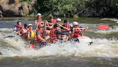

Mbre Inyang Rafting Company
Okobodi River Rafting Trip
Experience the thrill of rafting through one of the most iconic rivers in the world.
Trip Details
- Duration: 3 days, 2 nights
- Location: Okobodi River, IkotAbasi/Akwaibom
- Difficulty: Class III-IV rapids
- Price: $400 per person
Trip Description
This 3-day rafting trip takes you through some of the most spectacular scenery on the Okobodi River. You'll navigate through Class III-IV rapids, camp under the stars, and enjoy delicious meals prepared by our expert cooks.
Trip Itinerary
- Day 1: Launch at utaewa, rafting through usuhommong
- Day 2: Rafting through the ubog ufin utaewa, camping at Mkpere Ete
- Day 3: Final day of rafting, take-out at Okobodi Anyong